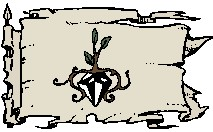

Les jardins de Jadhys
Histoire
La province des jardins de Jadhys est assurément la plus surprenante du royaume des Deux Lacs. Cette région singulière, surplombée par de grandes montagnes à l'est, bordée d'un immense marais inhospitalier à l'ouest, et recouverte aux deux tiers d'une grande jungle sauvage en son centre, était habitée par des tribus sauvages bien avant que les hommes ne bâtissent Tanith-Lenath.
En 995 CV, Laelith était déjà devenue une très grande ville, et certains commerçants commencèrent à vouloir étendre leur influence au delà des murailles de la cité. Des caravanes partirent donc à l'aventure tenter d'étendre l'influence commerciale de la cité, comptant bien profiter pour cela de l'avantage que pourrait leur donner les deux lacs. Les premiers colons s'installèrent au sud de ce qui sera la Divine Écluse et y construisent un premier comptoir commercial. La position était idéalement choisie, et tout ce qui transitait d'un lac à l'autre passa rapidement par eux. En 1003 CV, le comptoir donnait tant de satisfaction que les colons commencèrent à affluer par centaines. Le Roi-Dieu décida alors de sceller officiellement cette région comme partie du royaume et donna naissance aux jardins de Jadhys.
Des années plus tard, des explorateurs partis à la découverte des jungles au sud noueront les premiers contacts avec les indigènes, auxquels sera donné le nom de chupl'z.
Géographie
Les marais des Languissants bordent la frontière ouest de la province, et le centre est occupé par une grande jungle tropicale. Le sud et l'est sont eux montagneux, le désert de pierre délimitant la province à l'est. La capitale de la province est Shings, petite ville dont peu connaissent l'emplacement exact.
Population
La population est majoritairement humaine aujourd'hui, mais une forte colonie naine, initialement installée au nord-est sur le flanc des montagnes, s'est maintenant répandue dans tout le nord de la province. On estime le nombre d'indigènes chupl'z aux alentours de quatorze mille individus. Les jardins de Jadhys ne sont en effet réellement peuplés que dans leur partie nord. La jungle centrale au centre et les montagnes au sud sont encore de nos jours des terres mystérieuses, pour la plupart non explorées.
Villes principales. Orbyonn, Aziliane, Puifz, Shings (la capitale), et un peu moins de 40 villages.
Population totale. 46 400 habitants (60% humains, 20% nains, 10% halfelins, 5% elfes) et 21 200 indigènes des tribus chupl'z.
Cultes
L'ordre Noir du dieu Baine et l'organisation secrète Litos qui dirige les jardins de Jadhys auraient des liens très étroits. Laelith enquête depuis plusieurs années déjà, sans succès, sur cet aspect inquiétant de la province. Le concile permanent de 8 hauts dignitaires qui dirige l'ordre Noir sous l'autorité directe du Dragon y serait en effet implanté, mais jusqu'à aujourd'hui aucune preuve n'a été trouvée.
Politique
LE LITOS
Cette organisation secrète est beaucoup plus influente qu'elle ne le paraît. Outre ses relations avec Laelith, elle entretient également de nombreux liens secrets avec les autres royaumes avoisinants. La frontière entre commerce et contrebande sur les jardins de Jadhys est souvent plus que floue. Elle est présente partout, même si elle ne se montre pas. Pas besoin de milice ici, toute personne devenant gênante est aussitôt éliminée, discrètement. Cette manière de procéder explique certainement pourquoi depuis le temps la ville de Bental, la cité des voleurs, à seulement quelques heures à l'ouest de la province, n'a pas été remise dans le droit chemin. La rumeur dit que nombre de personnes « servant la province » y auraient été recrutées.
On connaît peu de choses sur le fonctionnement réel des jardins de Jadhys. À première vue les étrangers n'ont affaire qu'à des commerçants indépendants, point de milice ou d'armée par ici. Mais en réalité il existe toute une organisation secrète derrière tous ces gens, sans parfois qu'eux-mêmes le sachent : le Litos.
Jadhys vivant uniquement du commerce, avoir de mauvaises relations avec une province lui nuirait fortement. C'est pourquoi ses habitants s'acharnent à entretenir de très bons rapports avec toutes les provinces, avec Laelith, et même avec les royaumes avoisinants. Et pour cela une solution : ne jamais prendre part aux conflits.
Économie
Jadhys, à la différence des autres provinces, ne possède pratiquement aucune ressource naturelle. C'est certainement pour cela que les colons ont développé un sens du commerce sans égal dans le royaume, capable de rivaliser de talent de par le monde avec des royaumes comme la Sembie du temps de sa splendeur par exemple. La province use et abuse de sa position privilégiée sur la Divine Écluse, qu'elle considère sienne même si légalement le Roi-Dieu en est le propriétaire, et contrôle l'immense majorité du commerce passant d'un lac à l'autre. Tout le nord de la province est remplie d'entrepôts, de marchandises légales ou illégales, prêtes à partir pour Laelith, pour les provinces des Deux Lacs, ou plus loin encore.
Les commerçants de Jadhys sont tellement doués que la légende prête à certains le don de lire dans les pensées des autres. Pierres précieuses, vêtements à la mode, objets magiques, vieux parchemins, armes spéciales, drogues nouvelles, avec de l'argent on dit que tout se trouve aux jardins de Jadhys.
Guide du routard
La Divine Écluse. Une curiosité technique et un point stratégique.
Les entrepôts de la côte (de nuit). La même agitation que le jour.
La jungle. L'énigmatique capitale de Shings, que personne ne connaît...
Écrit par blueace